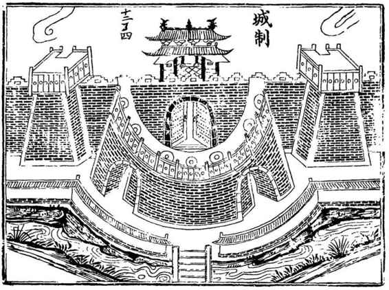
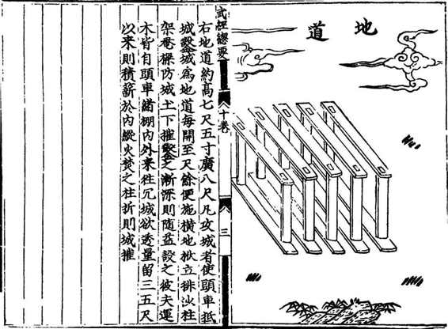
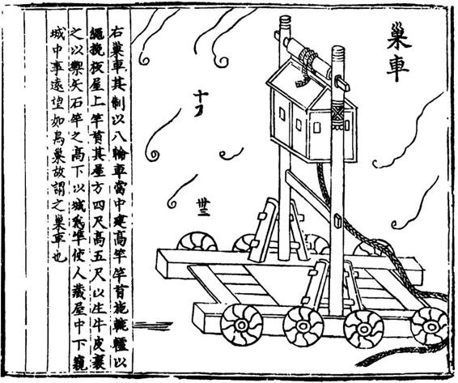
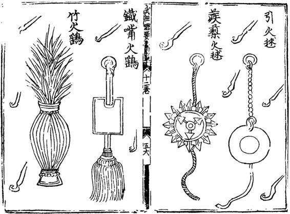
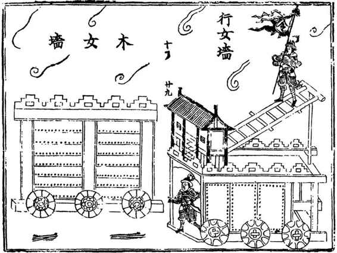
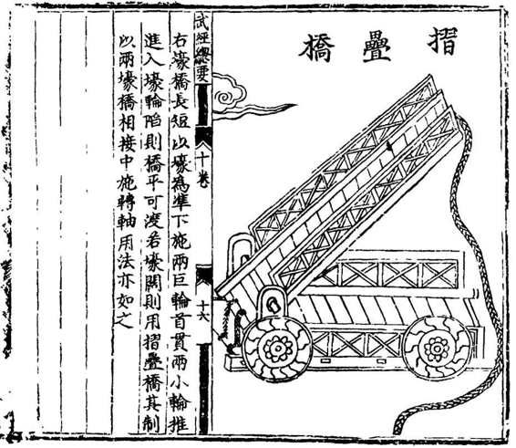

平静持续了足足十个月。
年底，十二月二十日（公历已是1642年1月20日），大寒节气当天，城中已到处传闻闯军将至。二十三日下午，忽见七骑疾驰而至，将两张纸贴在曹门外栅栏上，卫卒急追不及。众人看时，正是李自成的布告。
“是夜，贼大营至。”前度，闯军是偷袭战术，意乘开封空虚打一个措手不及，故假扮官军等等。此番，态度迥然，大军未到，先张布告，可谓堂堂正正。
所以如此，盖出四者：一，开封久备不懈，自成已知偷袭无益。二，一箭之仇、眇目之辱，令其耿耿于怀，此番再来，自当以雷霆威震之势，荡平汴梁。三，初围兵力是小股轻装，昼夜疾行，“精兵不过三千，胁从之众不过三万”。此次不然，“时自成有众五十万”，另外还带了一个帮手——结义兄弟、外号“曹操”的罗汝才。“汝才战士四五万，战马万余骑，马驺厮养不下四五十万。闯兵长于攻，罗兵长于守，相倚为用。”[23]《守汴日志》《汴围湿襟录》《明史》均载李、罗规模百万，《甲申传信录》至言合计“二百余万”。四，既然是大兵团作战，装备方面自非昔比，整编整备、精锐悉出，“每一贼有马三匹”，各种重型武器应有尽有。总之二围重来，李自成麾以重兵，耀武扬威，是决战姿态。
连主攻方向亦先予明示。初围地形不明，主攻西门是错误的，因为开封西门海濠特别宽阔，易守难攻。这次总结经验，将主攻方向放在东北至正北一线，故贴告示于曹门。
二十四日，进攻正式开始。当时，督师丁启睿率兵三千从南阳来援，在北门外立营迎敌。闯军刚发动冲击，兵刃未接，丁师即告崩溃，败卒狂奔进入北门月城（即瓮城，掩护城门之用，半圆形，故又称月城），而闯军骑兵紧追，随之而入。堵在月城中的官兵“哀号求入”，丁启睿在城上见此，要求打开北门令其部下入内，遭到王燮严辞拒绝：“此何光景？尚敢启门也！”拥入月城的闯兵，开始徒手攀援，很多已经爬上月城上面，进而再攀主城，则轻而易举，情形甚危。一名叫李耀的军官，率数十名回族勇士，“各持大柳椽，跃过瓮城，尽击贼落城下”。然闯兵仍不断向上攀爬，后续闯军也大批拥来，“炮击不退，贼兵拥集城下”。督抚面面相觑，又是王燮站出来充当“恶人”。他提出了冷血的建议：“火攻下击，以解其危”，不分敌兵己军，一律烧死。丁启睿还在沉吟犹豫（在他自当如此），王燮已下令投火月城，“兵寇不及避，霎时皆焚于火”。白愚对此记道：“合城称快”。后来，兵部于其文件中评估事态，称“若非知县王燮付之一烬，则汴城不可问矣！”
北门危机之后，转入胶着之攻防战，挖墙脚重新成为焦点，闯军一心把城墙挖透，城内则极力阻之。承担挖墙任务的，并非闯军士兵，而是被驱赶而来的四乡农民。盖因此事伤亡巨大，闯军自不肯以其徒耗有生力量。《大梁守城记》记之：
贼每令数十人持锤凿，闻鼓蚁进。至城下施锤凿，人一声，舍而退，继者进。砖石微动，施鹰嘴镢，亦人一声。首得砖者，劳而休之，终身不与攻城之役。[24]
撅得一砖，即得豁免。这种办法，利用掘城者求生欲，而听驱策，但因此所需乡民，人数也十分惊人，《守汴日志》有曰“胁从之众近百万”，数目应不夸张。偶有乡民反抗，《大梁守城记》载，有一乡民被闯军执刀逼迫前来，忽然“回身紧抱，向城大呼曰：‘我不为贼用，速发炮，愿与贼俱死。’”[25]不少乡民接近城下前，已死炮火之下。躲过炮火，到相对近些的地方，还得防城上之箭。闯军令所有掘城之民，都背负“版扉”亦即门板窗板前来，作为挡箭牌。虽然伤亡巨大，但毕竟征夫极多，故进展仍旧显著。到二十五日，环城所掘之洞有三十余处，每洞可容数十人，大小应在十平方米以上。对于已经潜入洞中的闯军，“砖石不能击，系柴加烘药下烧之，贼自出”；于是，“火昼夜不绝，自曹门至北门环亘十余里”。从中可以注意战争的实质是消耗，一切最终取决并归结于物力。从烧柴这一端，即可体会开封城的巨大消耗，“周府出苇柴，官府买蜀柴无几，强半出之社中”，从开战第一天起，所有物资都在急剧消耗中；目前吃紧的是柴，将来则必发展到粮食。

古代城防体系
由外至里：护城河、瓮城、城墙及墙上敌楼和战屋。每种设施，俱为一道防线，从而构成纵深的、空间立体的防御体系。

《武经总要》选图一•地道
《武经总要》为宋代官修军事大全，兹从攻城战角度选图若干作为参考，但应说明，四百年后明代武器装备较之已有很大提高。这里的“地道”不同于现代地道战，而是城下掘洞，将一种名“地栿”的木框架置入其中，然后“积薪于内，纵火焚之”，“地栿”烧塌，形成悬空，城墙因墙体沉重，自然下沉而崩陷。
二围战事突出之处，在于大炮成为主角。初围是奇袭，轻装简从，故少见炮战身影。二围再来，李自成倾巢而动。而且此时他的家底，除得之洛阳外，还有初围后十个月中间各地攻城的斩获，“贼之再围也，沿途攻陷郡邑，所获火药器械大称饶足。”[26]无疑，他已拥有一支非常完备的炮兵。
炮火显示了威力。一是重创城上守兵，死伤惨重（城上亦唯还以炮击，方能反制）。二是直接击毁城墙，二十七日，闯军“列大炮十余，一时并击，城垣随声而堕。”[27]坍现二丈余大口子，然后以步兵登城，骑兵随之。城内也迅速调集十余门炮，“步贼至半途者，一拥而下，死者无数。”如此炮火掩护下的来回攻防，一夜竟达数十次，黎明才稍见稀疏。
最猛烈一次炮战，见于十余天后。元月十二日，闯军调百余门大炮，构建空前火力，“齐燃击城，城被炮，倾颓如坂”。现场情形，“飞铁镕铅，四面如织，空中作响，如鸷鸟之凌劲风。”大约一百多名闯兵趁势已登上城墙，插旗城头。当时，“城上炮苦后坐”，可能是地势关系，安放炮的位置不理想，后坐力致炮不稳、准头欠佳，陈永福（这时他已晋升总兵）遂骑于炮上压之，“命左右曰：‘速点，速点，忠臣不怕死。’”经他的鼓舞，守军炮火重拾攻势。闯军稍却，城上赶紧以水大量倾于“倾颓如坂”的城墙缺口。这是聪明的救急办法，时当严寒，水很快变冰，闯军重新攻至却已不能由此缺口登城。
大炮既为杀手锏，双方便都动心思，改进、提升其效果。闯军首先有所发明，他们伐木制成大炮台，长十丈余，宽五丈余，高可三丈，容百余人，置炮其上，显然是为了改善发射角度和射程。效果应该显著，城内于是亦予仿效，但苦于缺少木料，故较简陋，只是做了炮架子，“立长柏木三如鼎足，悬大炮其上”。
围绕炮战，还生出迷信与邪术：
贼驱妇人，赤身濠边，望城叫骂。城上点大炮，悉倒泄。城上令僧人裸立女墙叫骂，贼炮亦倒泄。[28]
里面的道理，大致是阴阳相克。以为炮是阳物，女人为阴，阴之咒阳，阳即不举。另一边，也认同这道理，尔既以女人骂我，我则以无欲则刚之和尚反骂。双方都脱光了身子，试看谁怕谁。事属邪妄，是否果如所说一骂便灵，不得而知。但从中可见炮对双方的重要。
闯军战法直追现代处，尚在炮兵之外——它似乎还有爆破部队。连日来，一直在开封东城脚下不停开挖，直至挖成一个十余丈大洞。然后，每天往里面搬大麻袋，袋中满是炸药。待将大洞填满，再装上两根引线。引线粗得骇人，“长四五丈，大如斗”、“忽肩二长物如大屋柱贯坎中者，药线也”。终于一切停当，元月十三日这天，“马贼千余俱勒马濠边，步贼无数”，就等爆破成功，冲进城去。巳时（上午九时至十一时），点燃引线。《守汴日志》述说：
药烟一起，迷眯如深夜，天崩地裂声中，大磨百余及砖石皆迅直空中，碎落城外可二里。[29]
威力巨大。然诡异的是，“城上城内未伤一人。里半壁城墙仅厚尺许，卓然兀立。”被刨得仅剩一尺多厚的城墙，居然无伤。城外却惨不忍睹：“势若反击城外，贼在二里内者皆死。或尸著马上，块而糜烂，如塑鬼物未成者然。”“马、步贼俱为齑粉，间有人死马惊逸者。”大约当时所用的黑火药，究非诺贝尔所发明黄色炸药可比。引爆后，能量由敞开的洞口处释其大部，而闯军攻城部队又不明智地围在洞外等候，遂罹惨祸。当时人们不明就里，以为“此真天意，非人力也”。
古城在战火中迎来壬午年春节，进入崇祯十五年。正月初一当天，战况尤烈。李自成认为时值过年，开封守备不免松懈：
随于本日调集马步精贼数万，伏于海濠之外，乘元旦以为我兵守懈，约令各贼同时齐攻。前驱乡民，继以骇贼，蚁附而上。复用大炮上击，各贼随响拥登，势危万分，存亡俄顷。巡抚高名衡（初围后升任巡抚）、总兵陈永福率兵将躬临危险，指挥我兵奋死力敌，加以火药砖石齐施，贼不退兵，又以“万人敌”（燃烧弹，前有述）芦柴浇烘油，烈烟弥天，贼从不能立足，焚死无数，方始退却……全汴之功，此战称第一。[30]
初四、初八，连降两场大雪。守城士兵不能离岗，露宿城头。巡按任濬找到《守汴日志》作者李光壂，说：“大雪湿衣，兵寒难忍，须各给绵被或毡条御之，非立办二万件不可。”李光壂立刻去办，议定每名社兵出十件、每家当铺出五十件、大商人每户出三十件，不等；得到积极响应，“未及晚，城头山积”，被毡堆满。雪停后，任濬又找来李光壂，让他将征用的被毡，一一还给捐主。
李光壂在二围前夕，受命担任左所总社，是开封民兵五大领袖之一。自此以后，便以极强责任心投身守城战斗。曹门民兵力量不足，他自出资募丁，“每次人给钱百文、饼四个，百姓蜂拥愿雇，虽日用数十人，不缺。”每天，李家还自制厚饼三千个送城上，及二围结束，他一家制饼送饼数量超过十万。李光壂表现虽然突出，却并不孤立。开封许多富户每天都主动送饼给守军，“巨商巨族，各送饼千百不等。”又有乡宦刘昌、郑封、张文光等，“于上方寺安立大锅数百口，倡督乡耆，捐输米面，昼夜供食不绝”[31]，以援城上士兵。
应该说狂攻之下开封屹立不倒，军事层面之外，重要因素是合城齐心。以苇柴一项物资为例，上自周王，下至民间，咸与共担；“周府苇柴，令宫人运出园外，骡车数辆，昼夜载运”，而在民间，“每一社兵，出柴五束、十束，后至二三十束”，李光壂每天早晨天没亮，便要去找乡约派四轮车十五辆，专门搬运周府和社兵苇柴。到二月初九，仅经他手就运输十二万束以上；此后至解围，又运十余万束。
有迹象显示，李自成正失去信心和耐心。正月初三，他做了两件事。一是把丁启睿手下投诚过来的三千士兵，借口点名，骗到老营，全部杀死，原因是“恐其为内应”。二是将头领李狗皮打了四十军棍。李狗皮是进攻开封北门的前线指挥官，“闯贼怒其弗克，责之”。
以下情形同样说明这一点：初十，闯军持刀逼迫民夫重返原来所掘城洞，继续干。然而，诸洞已为守军夺取，民夫接近不得，“欲另掘，又为悬楼砖石击走，回到濠边，持刀贼乃尽杀之，屡驱屡杀，如是终日，死者万余。”[32]如此格杀勿论，显示了久攻不下的急躁。
躁进，直接表现在李自成身上。他的大营，本来距城十里，现在贸然移至仅三里许的地方。这一位置，更利于他观察部队表现，加以监督、指挥。他或许想以此给部队施压，或者出于对手下不够信任。他自然知道这很冒险，但迟无进展令他不能安坐十里之外。他险些付出比眇一目更重的代价——城上一炮手，注意到这新的营帐，“遂安红衣大炮一位，照的（瞄准）贼营，祭毕施放，远望飞烟尘灰一道，正中其营，打死人马无数，闯逆幸免。”[33]
反之，守方一边，却有不少进展。
正月初七，重赏之下，开封市民朱呈祥率百余人，决定“承包”夺取闯军所掘各洞的任务。他们的办法是，通过从城顶打通的洞，将烧着并加了助燃剂的柴堆悬入洞中，再不断投以新柴，使洞内烧至极热，人不能存——驱出洞外的闯兵，自然被城上箭石毙命——随即迅速、大量灌水使洞降温，己兵带短刀跳入实施占领，之后每洞各以五十名士兵守之，闯军卷土再来，则据洞击退。如此，闯军废时半月辛苦所掘总共三十六洞，尽落守军之手，开封一大隐忧消除。
甚至大胆出城骚扰。夺洞翌日，正月初八夜半三更，天降大雪，巡按任濬忽生一计，选奇袭兵五百，悄悄开了城门，渡过海濠，分几处杀入敌营。一阵乱砍，砍了就跑。闯军惊起，急追。过了海濠，接近城边，埋伏在闯军所掘城洞中之兵杀出，截断归路，五百奇袭兵也掉头回杀，共斩敌七百八十三级。李光壂叙至此写道：“推官黄澍同壂立城头，浑身雪厚寸余，竟不自觉。”

《武经总要》选图二•巢车
用于侦察，高度逾乎城墙，侦察者以车上小屋为掩体，“窥城中事。远望如鸟巢，故谓之巢车”。

《武经总要》选图五•各种火攻器
投掷型燃烧物，有的兼具利刃，以杀灭敌人有生力量。

《武经总要》选图七•移动堡垒
大概来自将城墙由死变活的灵感，有如现代装甲运兵车，在蝟集的矢雨中，有效保护进攻的士兵。

《武经总要》选图八•折叠壕桥
城壕上有吊桥，遇事收起，此装置则为攻方解决了架桥问题。双层，如遇壕短仅用一层，壕宽则打开折叠层，达到延长目的。
随即是十三日爆破失败、重创自身一幕，闯军很有些黔驴技穷之感，又恰此时，“忽见打粮贼（去各乡搜粮的闯军）数千自西蜂拥溃回，皆云‘不知何处兵马，尽是白旂，已渡黄河，长驱飞至！’”[34]当时，明军援军保定总督杨文岳部以及左良玉、虎大威等，确正向开封运动。初二，杨文岳曾派密探扮乞丐至城，告以“大兵即至”。闯军所见渡过黄河明军，应即杨文岳部。
元月十五日，元宵节。一大早，“老营贼五鼓拔营”。李自成总部先撤，“攻城之贼未动”。很小心，怕城内追击。其实，城内筋疲力尽，顾不上。到了中午，闯军飞骑传令，“呼众贼速走”。围城部队遂撤，“自西北往东南，扬尘蔽日。”
城内仍未敢轻动，直到第二天，巡按任濬方传谕各总社开城门。李光壂所任左所总社，协防曹门。接到命令，他找来器械，军民并力齐发，颇费一番气力，才将曹门打开。一行人出城察视，李光壂记道：
壂骑马戎服前导，黄推官、王知县各骑马行，周府方、邱二小内使亦同往，周视贼营，牛、驴、马头皮肠肺，间以人尸，秽满营内外，约广八里，长二十里，以繁塔寺为聚粮之所，粮深三尺。[35]
景状令人作呕，然并不为奇。凡战争盖不免如此。战争没有美好的一面。
从存粮看，闯军供应充足。除了粮食，被丢弃的还有妇女。十七日，“贼所遗妇女二千三百余人，悉归城下，因收月城内，禁兵民掠夺，俟其亲属认领。”这些无助的女人，单独置于瓮城内，以防再遭争抢。说是“俟其亲属认领”，恐怕也难，没人知道她们的丈夫、父兄是否为遍野尸体中的一员。十八日李光壂随黄澍等出城埋尸，他的所见：“尸横遍野，断发满地，死伤者无虑十万。令地方夫掩埋，十日未毕。”用了十天，仍未能尽埋。
总兵陈永福所部，从战场上共收集到闯军所弃牛只三万余头，是从乡民手中或征或抢，用来运输各种物资的，如今无主。巡按任濬指示，按市价折半卖与农民做耕牛，凡欲购牛者发给小票，排队领牛，李光壂负责收票。他察看了牛的情形后，报告任濬：这些牛闯军顾不上喂，“唯食草根泥水，腹有宿泥，不出十日必死。”任濬找来兽医诊断，结论相同，“事遂寝”。虽然似乎是微不足道的细节，却足彰战争破坏性。在农业时代，牛为主要的生产资料；一战即损牛只三万余头，而每头牛都可折合若干粮食产量，算一算账，会是一个吓人的数字。
二十七日，残局收拾得差不多，开封开始重建，主要是修补城垣，按下不表。
此即开封二围。崇祯十四年十二月二十三日，李自成纠合罗汝才复至，崇祯十五年元月十五日遁去，凡二十三天，历时较初围长四倍，且跨了年度。攻城者动用了所能的一切手段，而开封仍得保全。身为开封人，白愚自豪地写道：
守城之功莫赖兵将，而民壮之兵，亦称勇健。当攻城之顷，兵已拼死，协守二十昼夜，贼退。抚按于教场量功行赏，仍具题优叙，奉旨褒嘉升赏有差。[36]
他的意思，开封坚强主要在于开封人，奇迹属于开封人民。